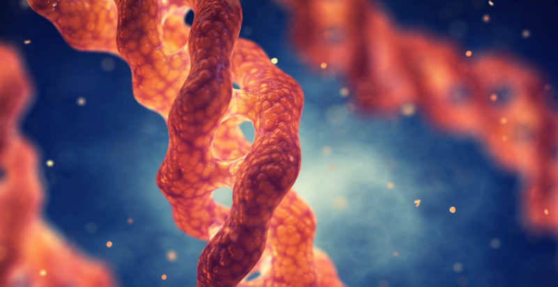

Tipos de Proteínas
Las proteínas pueden clasificarse de múltiples formas según su composición química,
1. Según su Composición Química
- Holoproteínas: formadas únicamente por aminoácidos. Son macromoléculas puras, responsables de funciones estructurales y metabólicas. Ejemplos: albúmina (transporte y mantenimiento osmótico), queratina (pelo y uñas), colágeno (tejido conectivo) y actina (citosqueleto).
- Heteroproteínas: poseen un grupo prostético no proteico
firmemente unido a la cadena polipeptídica. Según la naturaleza de este grupo se distinguen:
- Glicoproteínas: enlazadas a azúcares; fundamentales en reconocimiento celular e inmunidad, como las inmunoglobulinas y las hormonas gonadotropinas.
- Lipoproteínas: combinadas con lípidos para el transporte de grasas y colesterol, p.ej. lipoproteínas de alta y baja densidad (HDL y LDL).
- Metaloproteínas: incorporan iones metálicos que actúan como cofactores catalíticos o estructurales, como la hemoglobina (hierro), citocromos (hierro/cobre) y anhidrasa carbónica (zinc).
- Fosfoproteínas: contienen grupos fosfato en sus cadenas laterales, esenciales en regulación metabólica y señalización celular; la caseína de la leche es un ejemplo clásico.
- Nucleoproteínas: asociadas a ácidos nucleicos, como las histonas que compactan el ADN en los cromosomas.

2. Según su Forma o Estructura
- Fibrosas: cadenas largas, paralelas y muy resistentes. Desempeñan funciones de sostén y protección. Son insolubles en agua y estables a cambios de pH y temperatura. Ejemplos: colágeno en cartílagos y tendones, queratina en cabello y uñas, elastina en ligamentos, y fibroína en la seda de araña.
- Globulares: adoptan conformaciones esféricas, son solubles en medios acuosos y realizan funciones dinámicas: enzimáticas, regulatorias o de transporte. Ejemplos: enzimas (ADN polimerasa), hemoglobina, mioglobina, hormonas peptídicas e insulina.
- Mixtas: combinan dominios fibrosos y globulares; la miosina muscular es un ejemplo, permitiendo contracción y resistencia mecánica simultáneamente.
3. Según su Función Biológica
Esta clasificación refleja la enorme versatilidad de las proteínas en los sistemas vivos:
- Enzimáticas: catalizan casi todas las reacciones metabólicas. Ejemplos: pepsina, tripsina, ADN polimerasa, ATP sintasa.
- Estructurales: proporcionan soporte a células y tejidos; colágeno, citoesqueleto de actina, tubulina de microtúbulos.
- Transporte: facilitan el movimiento de moléculas e iones, como la hemoglobina (oxígeno), la transferrina (hierro) y las acuaporinas (agua).
- Reguladoras u hormonales: regulan procesos fisiológicos. Ejemplos: insulina y glucagón (metabolismo de glucosa), hormona del crecimiento, leptina (saciedad).
- Contráctiles o motoras: generan movimiento celular y muscular: actina, miosina, dineína, cinesina.
- Defensivas o inmunológicas: anticuerpos, proteínas del complemento, interferones antivirales.
- Almacenamiento: reservan iones o nutrientes: ferritina (hierro), ovoalbúmina (huevo), caseína (leche).
- Receptoras y de señalización: reciben y transmiten señales químicas, como receptores acoplados a proteína G, receptores de insulina o canales iónicos regulados por voltaje.

4. Según su Solubilidad y Comportamiento en Disolución
- Albúminas: solubles en agua y coagulables por calor. Ejemplo clásico: albúmina sérica humana, importante para el equilibrio osmótico y transporte de fármacos.
- Globulinas: solubles en soluciones salinas diluidas; incluyen anticuerpos y proteínas transportadoras como la globulina fijadora de hormonas.
- Prolaminas: solubles en etanol, presentes en cereales como el trigo (gliadina), el maíz (zeína) y la avena (avenina).
- Glutelinas: insolubles en agua pero solubles en soluciones diluidas de ácidos o bases; ejemplo: glutenina del trigo.
Importancia Biológica y Aplicaciones
La clasificación de las proteínas no solo es académica: permite entender procesos clínicos (diagnóstico de deficiencias, marcadores tumorales), el diseño de fármacos basados en proteínas recombinantes y la producción de vacunas de subunidad. Las variaciones en los tipos de proteínas pueden indicar enfermedades hepáticas, renales o autoinmunes.
Referencias
Basado en Lehninger Principles of Biochemistry (Nelson & Cox, 2021), Biochemistry (Berg et al., 2023), y artículos de revisión de Nature Reviews Molecular Cell Biology (2022) y Annual Review of Biochemistry (2023).